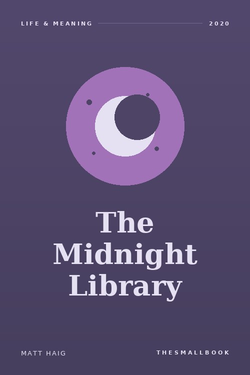

Library › Life & Meaning
The Midnight Library - Summary & Key Lessons

Between life and death there is a library, and every book is a life Nora Seed did not live.
📖 OPEN THE FULL INTERACTIVE BREAKDOWN →🌐 Read it in Hindi, Hinglish, Gujarati, Tamil & 22 more languages, with audio.
💡 The Big Idea
Nora Seed's life has contracted to a point: job lost, cat dead, brother distant, and she decides to end it. Instead she finds the Midnight Library, run by her old school librarian, where infinite shelves hold her parallel lives. Trying them, she discovers that the glamorous versions carry their own griefs, the swimming medal life holds the same father shaped weather, fame holds addiction, and even the life where she kept the cat is not the rescue she imagined. Slowly the fable dismantles regret's arithmetic: every life contains suffering and possibility, and the only life with no possible good left is none at all.
🧠 The 8 Key Lessons
Lesson 1: Regret Prices Lives We Never Audited
The Book of Regrets
Nora Seed's regrets have solidified into a single verdict on her one actual life, because the unlived lives exist only as highlight reels. Matt Haig's library forces the audit: each alternative, lived from inside, bills her in currencies the fantasy never quoted. The novel's psychology is exact. Regret compares our interior footage with others' exterior trailers, and loses by construction. Living the trailers at full length is the fable's therapy, available in real life only through imagination and other people's honesty, which is why the book works on readers who will never see a magic library.
📖 Example: The rock star life delivers the fame Nora Seed mourned and invoices her with a dead bandmate and a self she dislikes; the Olympic life contains the medal and the same family weather plus a body in revolt. Each visit retires one glowing regret by replacing it with a whole climate, until the Book of Regrets begins, literally in the novel, to lighten. Read the full example →
⚡ Do this: Take one big regret and write the alternative life at full length, including its Tuesdays, costs and griefs. Read what the fantasy omitted.
Lesson 2: Possibility Is the Antidote, Not Perfection
The Lives
The librarian's teaching is that Nora Seed does not need the best life, she needs evidence that lives remain possible at all. Depression's core lie in the novel is totalisation: this pain, this self, forever, everywhere. Each shelf refutes it with a counterexample she personally inhabits. Matt Haig, who has written openly about his own depression, builds the metaphysics carefully: hope returns not as optimism about outcomes but as the discovery that the story has more pages in every direction, including the direction of the life she already has.
📖 Example: The life where she simply stayed in her small town and lived kindly, the least cinematic shelf, turns out to hold durable goods the spectacular lives lacked. Readers consistently report that this quiet volume, not the fame or medals, is the one that rearranged them. It was designed to. Read the full example →
⚡ Do this: List five possible next chapters of your actual life, however modest. Possibility, itemised, is the exercise. Keep the list on the fridge.
Lesson 3: The Root Life Is Not the Failed Life
The Return
Without spoiling the mechanics, Nora Seed's education ends in a revaluation of her original life: not as the worst draft but as the one where her choices can still be authored. The novel refuses the lie that somewhere a Nora Seed is living without loss; every shelf held loss in different packaging. What the root life uniquely holds is her people, her history, and the unwritten remainder. The fable's closing argument, that the possibility of goodness in the life at hand is the thing depression hides, has made the book a standard gift in hard seasons.
📖 Example: A small act of kindness in her original life, a neighbour's errand she had dismissed as nothing, reappears in the library's accounting as load bearing in ways the medals never were. Matt Haig's moral bookkeeping is consistent: the big importance of small things is the interest rate by which ordinary lives outperform their reputations. Read the full example →
⚡ Do this: Do one small, deliberately unglamorous good thing today in your root life. Then write it in the ledger depression says is empty.
Lesson 4: Small Things Carry the Big Importance
The Quiet Lives
The novel's moral arithmetic inverts the highlight reel: a neighbour helped, a student encouraged, a brother answered kindly outweigh, in the lives where they compound, the shelves of medals and fame. Matt Haig plants the evidence early, a boy Nora Seed once taught swimming, a neighbour whose errands she ran, so the ending's revaluation is earned rather than asserted. Readers are being taught a metric: judge a life by the weight it carries in other lives at kitchen table distance, a scale on which most actual lives are far richer than their owners' ledgers record.
📖 Example: The swimmer she once coached reappears in her root life having built his own around the confidence those lessons installed, a return on kindness she had filed under nothing. The scene exists to indict every reader's filing system, because all of us are similarly owed and owing in currencies we have stopped counting. Read the full example →
⚡ Do this: Write down three returns on your past small kindnesses that you know of. Assume the ledger continues off the page. Let it affect today's accounting.
Lesson 5: The Librarian Is the Voice That Stays
Mrs Elm
Mrs Elm, the school librarian from Nora Seed's childhood, staffs the between life library, and the choice is the novel's quiet thesis about who saves us: not gurus but the adults who once made a safe, stocked room and treated our inner lives as real. She does not argue Nora Seed out of despair; she lends her books and lets experience teach, the librarian's method at cosmic scale. Teachers and librarians have adopted the novel in numbers that suggest the compliment landed exactly where it was addressed.
📖 Example: Their chess games and conversations reconstruct, shelf by shelf, a relationship in which Nora Seed was known at fifteen, the age before the contraction began. Matt Haig argues by casting: to be known early and accurately by one adult is protective equipment a person carries into every later midnight, which is why Mrs Elm gets the keys to the afterlife. Read the full example →
⚡ Do this: Thank one adult who stocked a safe room for your younger self, if they can still be thanked. If not, stock one for somebody else's fifteen year old.
Lesson 6: It Is Not Too Late Is a Claim About Physics Here
The Ending's Argument
Stories about regret usually run on redemption deadlines: the boat missed forever. Matt Haig's library abolishes the deadline instead, because parallel lives prove the opposite, that aliveness at any point reopens the shelves. Nora Seed's final education is temporal: the future of her root life is as unwritten as any volume she visited, and therefore as full of possible good. For readers whose despair speaks in perfect tenses, I have ruined, it is finished, the novel is engineered as a grammatical intervention disguised as a fantasy.
📖 Example: She returns to a life whose external facts have barely changed, cat, job, flat, brother, and the book asks us to watch the same inventory become a beginning rather than an ending purely through her recovered sense of its possibilities. The trick is the teaching: nothing in the root life needed to be replaced except the belief that it was over. Read the full example →
⚡ Do this: Take one perfect tense sentence about your life and rewrite it in the present continuous. Act on the new grammar once this week.
Lesson 7: The Parallel Lives Problem Is a Regret Machine
Reading Regret
Haig's fantasy works because it literalises the mind's worst habit: running unlived lives in parallel and billing the actual one for their imagined happiness. The library's cure is immersion, not information: Nora must inhabit the champion, the rock star, the glaciologist, and discover each carries its own losses wearing better lighting. Deepening means exporting the experiment. Your alternate lives are trailers edited by regret; the features were never shot, and no budget of rumination will produce them for review.
📖 Example: Readers and therapists have adopted the book as bibliotherapy for exactly this mechanism: the counterfactual loop that spikes at 3 a.m. Nora's discovery that the Olympic life contains its own despair is not nihilism. It is the observation that pain is not evidence you chose the wrong branch, which frees the actual branch for actual living. Read the full example →
⚡ Do this: Take your loudest alternate life and write its worst ordinary Tuesday in detail, the commute, the body, the bills. Trailers hate Tuesdays; let yours meet one.
Lesson 8: The Book's Answer Is Small on Purpose
Reading Regret
Against the multiverse's scale, Haig prescribes embarrassingly small medicine: notice the people who love you, do the next kind thing, accept that the root life contains the whole spectrum already. Critics calling this slight miss the design; grandiosity is the disease the book treats. Deepening means auditing your own rescue fantasies for scale inflation. The life you are avoiding improving is usually improvable by amounts too modest to feature in the fantasy, which is precisely why the fantasy prefers other universes.
📖 Example: Nora's return is marked not by triumph but by chess with a neighbour, a brother's forgiveness, a cat mourned properly. The novel's bet, vindicated by its millions of readers, is that this restraint reads as mercy rather than modesty to anyone who has actually sat where Nora sits at midnight. Read the full example →
⚡ Do this: Perform the book's prescription at scale today: one noticed person thanked, one small kind act completed before midnight. Log how the scale felt afterward.
✅ 5-Step Action Plan
- Write one regret's alternative life at full length, Tuesdays included.
- List five possible next chapters of your actual life.
- Do one small good thing in the root life today and log it.
- Audit a highlight reel comparison this week; find its omitted costs.
- Tell one person which shelf you keep visiting mentally.
- If despair is totalising, borrow the library's counterexample method hourly.
- Read the last chapters slowly. They were built to be reread at 3 a.m.
⚠️ When This Doesn't Work
It is a fable about suicidality with a hopeful engine; readers in acute crisis deserve real company and professional help alongside it, urgently, and the book itself says the library is not a substitute for either.
💀 The Graveyard Proves It
💬 Best Quotes from The Midnight Library
- “Between life and death there is a library, and within that library, the shelves go on for ever.”
- “The only way to learn is to live.”
- “Never underestimate the big importance of small things.”
Interactive version: mark lessons as read, listen in your language, share quote cards.